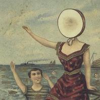

In The Aeroplane Over The Sea Review- The Staple for Concept Albums

In the Aeroplane Over the Sea is one of the best indie albums of all time. This concept album has so many features which make it unique and make it a great album in general. The ideas and themes explored are also a major factor of why this album is considered a classic.
The genres of indie rock, as well as psychedelic folk is what is used to produce this album and what delves into the themes, ideas as well as story of this LP. Each song is different and memorable and can be recognised easily because of how much they vary within the 2 genres. The album combines the 2 genres of folk and rock to make sounds that can't be replicated and music that I have never heard work so well together. There is some overly loud increases of sound and overused yelling that become irritating and are too common to ignore. These are the only production features that I found an issue in and it was too much of an annoyance to ignore. The story of a boy who recognises he will pass on soon is deeply and perfectly explore throughout the entire alum and this is the main concept of the album. The themes of nostalgia, being a child and loving those moments can resonate with anyone old enough and is perfectly implemented. The pacing rounds off the story perfectly and is wrapped up at a great time which adds a lot of replay value to the LP.
The lyrical elements are well developed throughout In the Aeroplane Over the Sea. The themes of nostalgia, childhood and love that I mentioned above are perfectly portrayed through the lyrics. The lyrics create vivid imagery and use many more techniques to capture these emotions and it helps the albums story progress. There are some strange lyrics that are slightly out of place and I don't think were a good inclusion, but these were few and far between. The storyline itself is an interesting concept executed perfectly, making listeners themselves reflect on their own lives while telling a compelling tale. The delivery on each track varies and captures the ideas behind the album perfectly, depending on what each track focuses on. The variation in topics within the main themes of the album are implemented well and continue to reinforce the concepts of In the Aeroplane Over the Sea. These ideas, themes and story mix to make one of the best concept albums ever.
Other than production that was irritating at points and strange lyrics at other times throughout the LP, In the Aeroplane Over the Sea is one of the most unique concept albums. Each element, idea and theme makes it a classic indie album and a masterpiece of storytelling in the music industry.